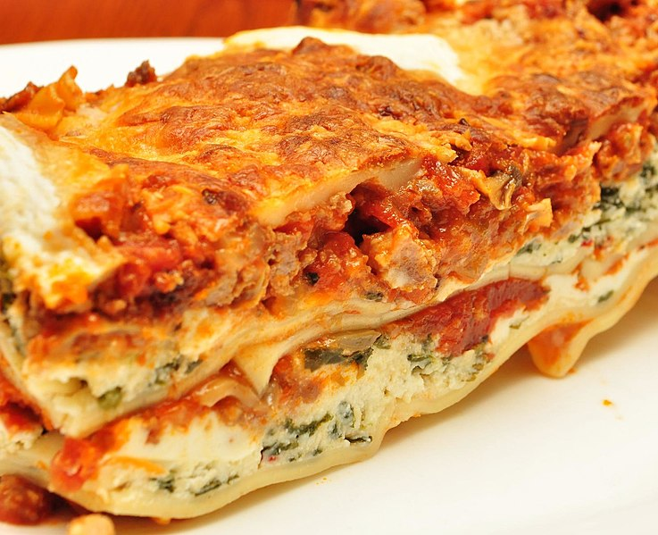

Lasagna

Description
The homemade pasta makes this! But if you don’t have the time it’s still an amazing lasagna recipe. I’ve been eating the leftovers for days now. Couldn’t bear throwing out one homemade noodle.
Ingredients
- 4 tablespoons olive oil
- 3 cloves garlic
- 1 large onion
- 2 lbs. ground beef
- 1 teaspoon basil (dried)
- 1/2 teaspoon oregano (dried)
- Dash nutmeg
- 4 tablespoons worcheshire sauce
- 1 tablespoons A-1 Steak Sauce
- 1 tablespoon Heinz 57 Sauce (if you like less sweet, leave this out)
- 4 tablespoons red wine (Chianti)
- 1 can tomato paste
- 4 cups whole canned tomatoes
- 16 oz. cottage cheese
- 1 lb. lasagna noodles (optional homemade lasagna noodles below)
- 1 1/2 lbs. mozzarella cheese
Steps
- Brown chopped onion & garlic in olive oil.
- Add meat and cook through.
- Drain any grease. Add oregano, basil, nutmeg, wine, and sauces.
- Add tomato paste, tomatoes, and enough juice from tomatoes to fill the tomato paste can.
- Simmer uncovered for one hour. All liquid should be cooked off.
- Add cottage cheese to sauce. Line 9×13 pan starting with layer of noodles then sauce then cheese.
- Complete 4 layers (12 noodles) and finish with cheese.
- Bake at 350 degrees for 20 minutes.